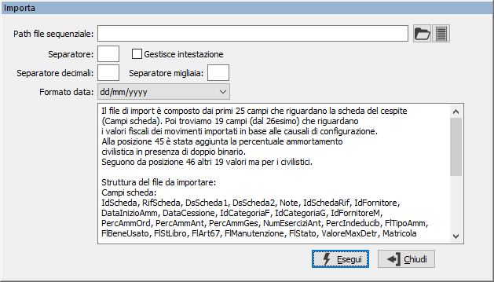
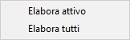
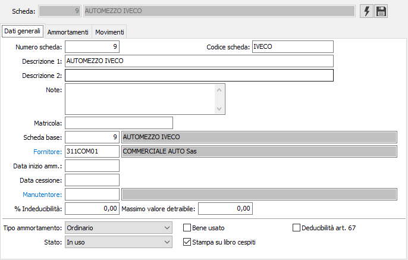
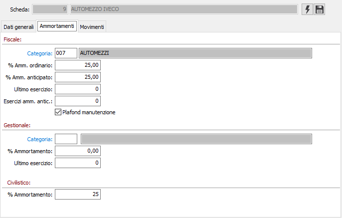
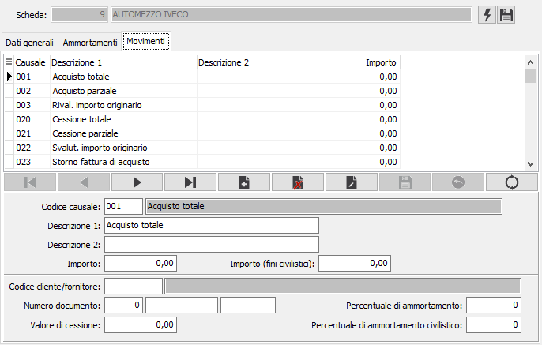

Ripresa saldi cespiti
La procedura permette di inserire manualmente (oppure importare attraverso un file di testo) le informazioni necessarie per la ripresa saldi delle schede cespiti; indicando i dati anagrafici della scheda ed i totali della scheda all’esercizio di apertura dei cespiti, vengono generati i corrispondenti movimenti.
La parte superiore della finestra consente di visualizzare la scheda cespite in oggetto, con i pulsanti per le operazioni da effettuare. Le schede inserite ed i relativi valori sui movimenti rimangono visibili fino a quando non viene fatta la generazione dei dati.
Il pulsante consente, tramite la seguente finestra illustrata sotto, di importare i dati dei cespiti da un file sequenziale opportunamente configurato come descritto nel riquadro istruzioni della finestra attivabile e disattivabile con il pulsante a lato del pulsante di apertura file. Nella finestra sono richiesti i parametri necessari all'importazione dei dati quali: percorso e nome file. eventuale separatore di campo, esistenza dell'intestazione campi, separatore per decimali e migliaia e formato della data.


Il pulsante consente di generare definitivamente la scheda ed i movimenti cespiti . Premendo il pulsante compare il menù a lato da cui è possibile decidere se la generazione deve essere eseguita per la scheda attiva o per tutte le schede inserite. Una volta effettuata la generazione la scheda ed i relativi movimenti non compariranno più in questa procedura, ma saranno disponibili direttamente dalla gestione cespiti.
Dati generali

La sezione contiene le informazioni necessarie al caricamento della scheda che sono le stesse della procedura di manutenzione scheda cespite.
Ammortamenti

La sezione contiene le informazioni necessarie al caricamento dei dati per il calcolo dell'ammortamento che sono le stesse della procedura di manutenzione scheda cespite.
Movimenti

La sezione contiene le informazioni necessarie al caricamento dei movimenti pregressi; vengono proposte tante righe quante sono le causali cespiti presenti, da completare a seconda dei movimenti necessari da inserire; le informazioni sono le stesse della procedura di manutenzione movimenti cespiti.